this is in an html because this seems to be a lot more convenient than sending a txt file over discord and expecting people to be able to read it comfortably. i threw in some of my own art, open images in a new tab to view them in full
navigation: basics, characters, house, swamp, city, hell hotel, area 52, rewritten manual descs
supplementary material: subtitles from the original
navigation: basics, characters, house, swamp, city, hell hotel, area 52, rewritten manual descs
supplementary material: subtitles from the original
brainstormed with my friends!!!!!!! although ive done most of the ideas myself at this point if something is missing or out of order: i just forgot!!! i never played the game myself and only saw the game played through once, back in march 2026. im mostly going off of what i did remember, or comment on during those voice chats, plus the subtitles/voice clips & the manual however this is written wth the assumption that you have at least some of the context for what happens originally. if youve never seen anything of the game this may seem confusing, so apologies this is not going to be a real fangame realistically, but i still like to fantasize about it, so some stuff (especially in the next section) talks about it like it could actually be a real thingbasicsnow set in between space goofs s1 and s2, with changes to support this (ie the earth doesnt blow up and neither does the house), although in most aspects it takes more from s2 just cuz i like it better also the characters themselves are also broadly more in character. covered more in detail in the next section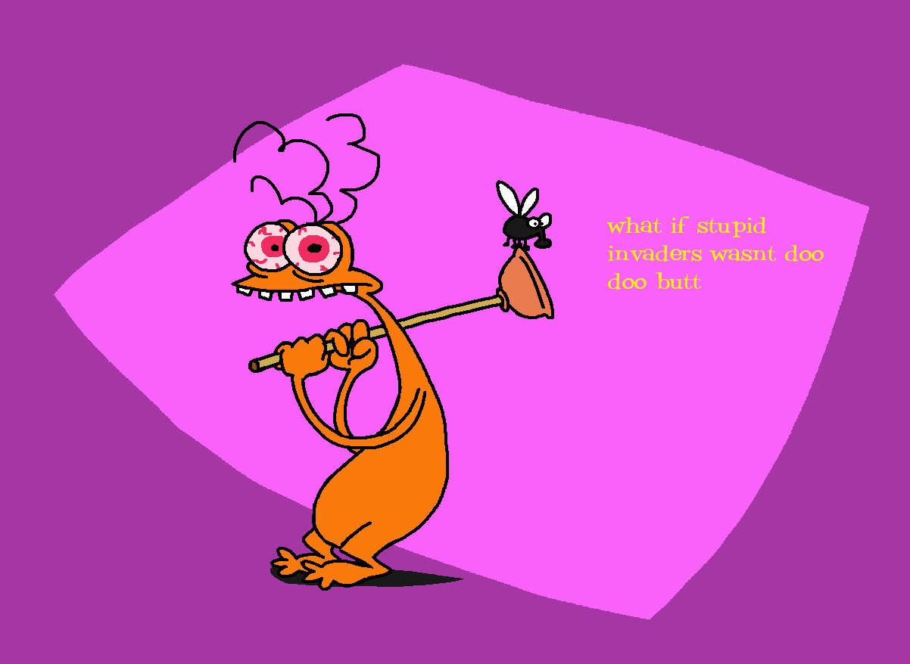
in terms of visuals. its 2d animated and heavily takes after space goofs s2 as well (stereo looks more like s1 however) in terms of character design and backgrounds. down to stuff like the earth seen from space being yellow for some reason, and the grass around the house being red (instead of green as in the game) the house indoor backgrounds are still styled like s2, but its in the middle of being redecorated, so theres s1 background elements, and, like the original game, theres probably more detail and things strewn about than the backgrounds in the show tend to have the smtv actually sees use throughout the game! the sequences where its used are as accurate to the show as reasonable, with the lalalalalaaaaa and the music and the transformation gags etc the tone of the game is still more raunchy than the show, and they still swear and that, just without the misogyny/transphobia or a good chunk of the toilet humor. also get rid of the bit where every non-main character just dies, here they tend to stay alive actually keep some of the funnier dialogue intact (ie "wow id hate to see the cheese that mouse eats", obviously "you are going to die and you are going to scream while you die and then you will be dead" and fugu fish, etc), a lot is rewritten though gameplay shouldnt be so damn obtuse. less focus on gameplay and more focus on dialogue, have more characters to talk to and have everyone be able to comment on things in the environment game overs allow you to just immediately restart in the same room you were in, instead of having to reload a save music is the same for each area as it originally was, if possible. for new areas pull other music from space goofs (s2 too!) (apparently stupid invaders already has a lot of space goofs music just unused so thats a lot to pull from), and if not space goofs then oggy or other xilam shows the menus are also the same with redrawn art, looks similar to the show's credits all tabs have art of a a character somewhere now, if they havent already. for example, the file select has stereo lying on the bottom in what little free space there is, the options have etno or something. and the little confirmation prompt windows still retain their characters the cursor is still a hand (i would avoid using the random foot cursors though), but changes colors (matching eye color the looking cursor too) depending on what character youre currently controlling, instead of being a human hand. the cursor also changes to match when you use disguises! in menus, outside of a save file, it just randomizes to any of the five main characters' non-disguise cursors every time you go to a different menu tab also clicking on yourself is what opens the inventory the logo of this theoretical remake should be inspired by the stupid invaders movie's logo (since its styled like the space goofs logo) make the letters look better (the "t" is really thin), change the colors to actually represent the five aliens' colors (i dunno what to do for the sixth letter in "stupid"), also change the background yellow triangle shape to not just be copy pasted from the space goofs logo, just draw a new one maybe append "remake" to the logo fonts to use. im leaning towards dolores here potrzebie: the original game used it, which is a freeware font, although it literally doesnt have apostrophes and many other characters (this font's original page suggests it actively wasnt designed with them in the first place) which makes it sort of useless, unless youre using an image for the font (instead of an actual font file) and substituting apostrophes with those from other fonts dolores: space goofs itself uses it (in credits, also stuff like the iggy pop dvd etc; the s2 swfs use DoloresExtraBold and in one instance DoloresBlack). its also a serif font, its more rectangley and less pointy than potrzebie. the version i got is WAY more complete in terms of symbols too. in the download i have, Dolores Bold (э) fixed.otf fixes э in cyrillic but is otherwise identical to dolores bold. the version i got doesnt support any latin with accents, like in french, though remake the original manual. its accessible ingame, redrawn with new art in color (matches the remake's and show's art) & new character descriptions that are more accurate to the characterisations in the show and the game's remake. descriptions are found at the end of this txt the manual still has the walkthrough portion, it only shows the pages for areas youve gotten to on at least one save file, also only shows the descriptions for worlds and minor characters youve gotten to i think the game would be in 4:3. the original was in 4:3, space goofs was in 4:3, i cant even really imagine 16:9 space goofs minigames in bonus features, recreations of the original promo webgames and the others are made up. you unlock most of them throughout the game? - shoot game, now you play as bolok (instructed by sakarin) and shoot gnomes based on all five aliens. and maybe other aliens, like a shockwave game i talk about more later in here - candy paper doll remake, im already making this LOL - gaz gaz gorgious, name spelled correctly now, and the guy with the gun should look less like bud than he does for some reason - itd be anachronistic (this is supposed to be before s2) but itd be cute if there was a recreation of the game from the ep @spacegoofs.com, a 2d platformer with bud, thats his minigame - something for etno, probably involves ship building - stereo gets the one multiplayer minigame. idk what the gameplay is but both players are on one keyboard, you can play alone if youre determined enough probably (ie fireboy and watergirl)characterseveryone broadly matches their show characterisations. lean closer to s2 personality-wise, and especially design-wise (not for stereo cuz stereo looks like butt in s2) also check the manual descriptions at the bottom of the page for more info - etno has still been busy being an anthropologist (as in s1) as opposed to building ufos and such to get home (as in s2), so the ufo he makes here is only one of his few attempts thus far. the events of this game make him completely pivot to trying to get home for s2 candy she/her shes just explicitly a girl, otherwise basically unchanged from the show the idea is that its an outright retcon, otherwise its weird they would all get back to the hehimming in s2. reality where this page from the old space goofs site (only in english) and a single page of the original manual were accurate to the show in terms of candys pronouns (it was page 33 in the pc english manual, "After jumping out of her diving suit, Candy must make her way down the left side of the bathyscaph." unfortunately the rest of the manual continues the hehimming) obviously dont have gorgious' dynamic with candy be like it was in the game!!! no weird gross moments. i think they should be teasing and jabbing at each other constantly, but you get the sense that theyre still friends, even despite the constant disagreements and for some reason it wasnt so apparent in the original that bud was obsessed with tv so its way more evident here stereo is just my headcanon characterisation which is built off of the old official descriptions that they just never freakin used in the show for some reason. so he likes reading (WAY too quickly), and learning fun facts, and being really pedantic. hes stuck up to some degree & always feels the need to be more right than everyone else, which leads to frequent arguing between the heads. has a really good but mostly useless memory and prone to misremembering things important is that stereo MUST be going :p at least several times a note for the rest of this txt about how i refer to the stereos. right stereo is the one on his right hand side and hes the one thats squeaky, left stereo is on his left hand side and hes raspy. its good to note because its ambiguous who left/right stereo would be referring to otherwise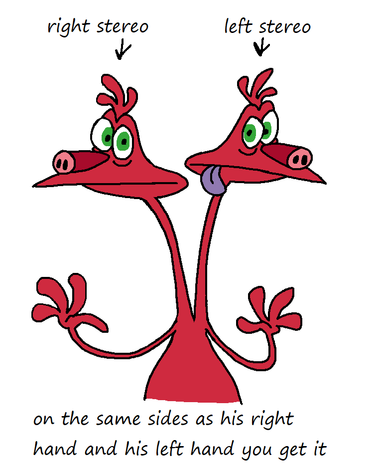
idle animations!!! also carry over from the original if they make sense (ie candy constantly nodding off doesnt make any sense but some others may) bud - scratches his ass and looks bored; yawns and stretches, especially his back so he appears considerably taller candy - notices something on the floor and sweeps it off with her foot; sighs, crosses arms and glances around impatiently etno - checks nonexistent watch and just sniffs something in the air; does that hands on hips pose he did in the original and taps foot gorgious - hands on hips and looks around (with raised brow kinda grumpy); eats something not visible off the floor for no reason stereo - both look at each other, one about to start talking but the other gestures to keep him quiet; both look around in different directions and bump their noses into each other and go :p - bolok has his pink gun from the pro, as well as his fish dad who keeps berating him. the whole time bolok tries to live up to him and get his approval, its actually like 75% the reason hes going on this bounty hunt. hes rather pathetic. most of his lines are "im a professional", and he sneaks around like in the pro also. will scream at things sometimes like in the episode also bolok has other weapons, with the ice gun from the original (only used in the house), and different weapons in different worlds boloks fish only calls him lucien like in the pro, and at some point alludes to the gnome that he adopted in favor of him at the end of the episode. like telling bolok his gnome brother is so much less disappointing of a son sakarin also looks like the show, sounds like the game voice cuz its more sinister? DO NOT write out his accent its just difficult to read sakarin did get arrested after zero stuff (after he came back from that alien planet), escaped jail and has been hiding out from the authorities in area 52 and performing his experiments and other stuff there. after the events of the game he gets caught and they put him in jail again the game is somewhat inconsistent on whether its spelled sakarin or sakarine, however most people know him as the former and the game uses the former more too (for interaction text, whereas subtitles in a single cutscene use sakarine twice and thats the only namedrop of him in cutscenes/dialogue) keep the random bear with a hammer that keeps appearing in closets and fridges and such. add more instances in the two new worlds a poster had more first names and last names, listing them here theres etno polino & candy caramella & bud budiovitch & stereo monovici & gorgious klatoo, obviously. notable mostly for spelling of klatoo being consistent slobodan sakarin / Dr SAKARIN lucien "i'm a professional" bolok nelson bone archibal de la cruz [uncertain who this is, VAR_.TXT defines ARCHIBALD in area 52. cut character maybe?] bernaro henri moumouche [i think this is the giant fly] chickenzillahousein the intro we skip the brief portion where they have everyone crashlanding on earth. it just starts at the bolok and sakarin interaction (although it should be paced better and not take forever for anything to happen like it originally did) the footage sakarin shows of the aliens, instead of being a random shot from an upcoming cutscene or a promo render(?), is drawings of them in front view (somewhat unflattering) and he shows a photo of the house from the usual angle, then the camera zooms in there and transitions to the indoors scene theres bud, candy, gorgious and stereo watching tv, bored, and wondering how many years theyve been stuck on earth, argung if its been like 4 or 34 years etno barges in and goes "my friends i have good news! the new spaceship is finally complete, we'll be ready for liftoff in 5 minutes". the line here is slightly changed, as etno does not repair the same spaceship they landed in (the one in s1 ep1 got obliterated anyway), he just makes a new one, same one that they used in the original everyone is actually willing to believe him that itll work because this is before he started making a lot more spaceships in s2 and failing repeatedly, but theyre also annoyed at how much time he wasted being an anthropologist while everyones on the way to the ship, candy suggests popping by professor helmut just because he has the closest available source of Alien Estrogen. she suggests getting it nicely "or we can steal, it im not picky!". gorgious says "we dont have time for that, you can get it from something other than this crappy planet". "well while we're still here it would be nice..!!! but you might be right" at the ship bud of course takes an excuse to go retrieve his tv. i think he just gets distracted watching it for a couple min and forgets he was supposed to pick it up theres a shot outside while you can hear the aliens in the house talking, with bolok in silhouette sneaking around, and stomping a garden gnome on the way to the house & kicking one of the statues near the stair to break it (as often in s1). also a few more shots of him sneaking around like in the pro, and a shot of him placing his fish bowl on a table somewhere in the house. he literally just appears behind one of the aliens, between shots, when he says "danger of instant death" (but the aliens dialogue leading to that should be better worded) bud showing up talking about what he saw on tv, and the "you are going to die and you are going to scream while you die and then you will be dead", is completely intact, of course - outdoors, the house has the second built up section that the game added to its right. it was built mostly by candy here. the statues at the entrance of the house are still there, but the one that got destroyed in the intro just remains destroyed for the rest of the game and the surrounding grass is still red, instead of green, as i mentioned & they have the weird mostly-leafless tree in there too indoors the the location visuals match s2, but with some decorations matching s1 because candy hasnt finished redecorating yet of course theres rooms that are not in the show because the additional section of the house has them instead bud still starts out in the same toilet, which i guess is from the new section of the house, and also escapes the same way. this part is largely unchanged. i dont think he has the time to be taking a dump though (unless taking a dump was unused already??), and will just sit on the toilet if you click there, and look scared theres the unused(?) bolok lines too, so actually carry them over. you can click on the door and bolok threatens bud, who in turn says stuff like "the toilet is occupied just wait for your turn!!". bud doesnt actually believe bolok is killing him for occupying the toilet, he is also just joking around (panicky) one of the bolok lines he literally says the dictionary definition of the word "die" (like the joke i made about "D I E...DIE...DIE...DIE. YOU WILL BE DEAD, DEAD, DEAD.") like "die. verb. to undergo death, to stop being alive," obviously "I am a professional... you will not get away from me !" is a requirement, it has his favorite phrase bud still disintegrates santa. and hes green gloop and just crawls away offscreen he also lives, technically also the dead dude in the basement also dies but scares bud beforehand. this guy looked like count gracula i thinkkkk? which wouldnt make very much sense, since the episode would have happened earlier than the game & count gracula turned into a normal guy there the stork is on the roof of the new section of the house as in the original after the "Your roof ? You're outta your mind buddy... we storks have been hanging out on this roof for 8 generations... so get your big butt back into your turd mobile and get the hell outta here !", bud says "but-- but we only installed this roof last month??" the stork also gets exploded from below but is just covered in soot, shouts down the chimney "Okay I Get Your Goddamn Message you snot faced little brat", literally packs her bags and leaves, while grumbling more swear words same gruff man voice and still referred to as ms stork. ms instead of mrs now though. i think she assumes bud is a baby (canonically he does look somewhat like a baby stork, as you know) and refers to him demeaningly as such bolok is still in the closet he gets taken out somehow i forget the specifics the aliens do all recognize him from his gnome shooting escapades that happened not too long ago. bud (who was being actively hunted down here) and stereo (whos just a coward) are scared of bolok and the fact that hes trying to hunt THEM down now instead of the gnomes, the rest arent scared cuz candy and etno believe he can be dealt with again anyways, and gorgious thinks he can just beat bolok up personally - miscellaneous room details bud's room actually exists, and its a total mess (candy hadnt gotten to redecorating it so it matches s1, and theres peeling wallpaper and such). the gutted teddy bear is still there too poke fun at the original game being a ubisoft game. buds room has portraits (clearly drawn by himself) that just parody other ubisoft games. go anachronistic and reference games that came out after stupid invaders even, with pictures of bud dressed up like john far cry or john asscreed. and of course theres band posters here, you can click on each and bud will comment on them excitedly theres a room that has the weird metal testing chamber from maybe baby/zero stuff/you drive me crazy. not sure what it would be for, i think itd be in etnos usual lab that tends to be in the show? i feel like thatd make the most sense, reference how they just stand behind a freestanding wall with a window in it in time traveller bud can go into it and spin for fun for like 5 seconds, he gets all flattened (he was flat against the wall inside) and floats out like paper before getting back to normal. otherwise you put like. some item in it. unsure what candys room mostly matches s2 but with the bed and some other furniture from s1, and the snoutra lamp (and snoutra posters, just fewer of them). also the door actually has a label on it (which it didnt in either season to my knowledge), her name in nice cursive with hearts around it bud can still snoop around in candy's diary, opens on a random page but all he sees is her insane ramblings about hot men, with an apparent snoutra summoning circle. bud almost decides not to look further, but flips over another page and its just "never mind snoutra is so mean to me : (". bud closes it afterwards in hopes she doesnt find out hes been snooping around in it "again" a18v03 (background from the original) has a framed picture of a vacuum cleaner for some reason. which should be in candys room instead lol the hairdryer can be used by bud (same as in the original, i think) and he looks at the camera with a significantly bigger volume of really puffy hair, then shakes his head to get it back to normal. etno isnt tall enough to use it and isnt sure why its even here, considering candy is Rather Bald (and also isnt tall enough to use it) the creepy phone call guy is just really REALLY into aliens in general, and keeps asking if they have tentacles or other alien body parts. clearly has a kink. and bud keeps having to tell him stuff like "you must be mistaken, we're not aliens..." "no i have 2 arms and 2 legs and 2 eyes, like you!" "for the last time! i dont have anything like that down there!!" the other one of the statues outside the house gets destroyed in one of the puzzles and Also just remains gone for the rest of the game. hence why the statues are not in s2 the kitchen just has a stepladder in it and a stool in front of the sink. when commenting on these, bud has no idea why theyre here, but etno correctly deduces its just for candy, who is too short to reach anything on her own you can pick up the stepladder and move it to reach some item placed high up somewhere (on a wall cabinet in the kitchen?) the attic looks like it does in s2 for the most part, has the usual tv, two couches in front of it (bud's usual couch and the wider red one), the bed and gorgious' bathtub. its still actually mostly undecorated you can have bud sit on the couch but he will get up after like 5 seconds (or if you click out of it) because even he has the conscience to know he shouldnt be doing this at this time. etno will just not sit here to begin with the living room has a camera near the ceiling (thats always shown in the house but never actually seen in any other shots) but its been smashed up, bud actually figures it was bolok's doing the fish bowl with bolok's fish dad is just placed somewhere in the house and nobody suspects anything wrong with it. bud says "wait, did we get another fish?", the fish answers "you definitely have. yeah.", bud "oh alright then" not even questioning the fish talking back to him. bolok retrieves the fish bowl later offscreen you can inspect the gnome outside this time. bud says "im surprised we even have any of those left after that guy with the big gun kept shooting them!" he can also stick his head through the mostly-leafless tree if you interact with it and then pop out the other end, i think it can be a fun visual gag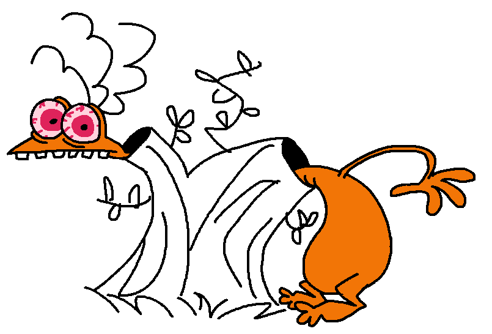
- bud frees everyone from the ice you know what happens gorgious, responding to etnos insignificant dried up raisin of a brain comment, says this about bud "hey be nice to him! look at his head, there aint that much space to have a brain anyway! HA HA ha ha" bud is displeased about these slanderous comments from etno and gorgious & also says "what. how do you know that" to candys sunstroke at puberty comment. everyone just talks over bud and ignores his complaints here stereo says some pedantic nonsense like "thats got nothing to do with puberty, a sunstroke doesnt just stop your brain's development" "have you read any psychology book? clearly whats wrong with bud is--" bud interrupts him and says "okay guys i get it!!! :(". etno and both stereos apologize immediately, gorgious doesnt because hes mean, candy doesnt because she wasnt even trying to be mean and she says "..did i do anything?". then everyone looks over at gorgious and he says "what?" etno then still finds an excuse to leave, blatantly lying about how important his work really is, and gorgious says "whats with this guy and humans??" candy takes an excuse to take her vacuum to the ship and tells bud and gorgious (who are already standing here with the tv and fridge) to not bother trying to stuff the tv and fridge into the ship cuz theres not enough space, and they go "awww :(". bud also says "well at least i brought in my magazine collection..." stereo to candy "can i grab 30 books?" "no" "10 books?" "no." the bathroom that actually leads to the secret lab is locked, so you have to run around the house to find a way to the bathroom. like etno just accidentally locked it from the inside and proceeded to lose the key somewhere so etno also gets to explore the house (instead of just his room) and comment on the same things as bud. it doesnt take too long to find the key, but you can explore just to see his comments etno has different comments on things from bud, more observant, and he can also comment on zebra carpets in certain rooms, which were of course his idea. he can also talk to the other aliens while theyre just waiting around for him & theyll just be kinda annoyed at him taking his sweet time. gorgious says he even suggested just ditching etno and leaving anyway, but everyone else rejected this idea the other three toilets can be used as fast travel throughout the house, between the attic, the one on the first floor, and the one youre in at the start of the game which is in the new section of the house what is the big banana in the secret lab for??? i know its a ref to neighborhood watch but thats it etno still refers to the computer as "my electric computer friend" with regards to "You see the ship only has five seats... and there are five of us" he instead says "and there are five... well, six of us, but two always share a seat..." a lot of the etno and computer dialogue here can just be largely intact (although im not sure about the uncharacteristically rude for etno dialogue option), but add or change dialogue related to the stuff that has actually been changed in the remake etno makes an excuse to go to the bathroom to actually go to the smtv in the smtv sequence leading up to the thing with maurice, one of the smtv gags is a 2d version of etno's original model. as accurate as possible, down to the green eyes & weird misplaced nostrils & other weird proportions and colors. the rest of the gags are from the original game, unless theyre gross maurice has largely the same design, but give him a red nose instead of black. more similar to etno that way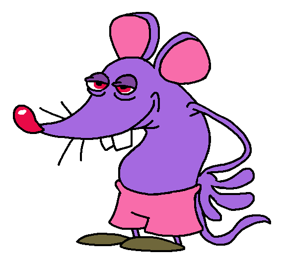
to make the philip bit work, after the "Maurice is that you ? Unbelieveable ! I had given up all hope of meeting you !" the computer immediately asks "can you do your famous dentist bit for me maurice?". you have a dialogue option of doing the dentsit bit, or making up something else on the spot about actually being philip [i believe this is reimplementing some cut dialogue] after the dentist bit (the "I knew it was a trap, Maurice doesn't do a dentist bit. Maurice is a great astrophysicist. I knew it was you Etno ! You won't be going anywhere in your spaceship."), the computer just pulls out a hammer to smash etno with for his blunder of being a complete faker & poser, and thats what does the game over, it just goes back to the dialogue choice you were just on with "I'm not Maurice, my name is Philip and I'm a travelling kumquat salesman.", to the computer's confusion, "philip" (etno) says "not many people know about this. i have connections and can get you maurice's phone number if you let me into the safe." and the computer gladly obliges and opens the safe for him then "philip" (etno) retrieves the materials and walks offscreen, goes onto the smtv and then comes back etno "im back from my bathroom break. i know it took a little while... but i can get you ready to go with us now!" computer "but.. what about maurice's phone number? this philip said he would retrieve it" etno "look... im..... sure we can figure that out once we're back home" computer "and how would my data possibly fit in a small enough space to be placed on the ship?" etno "all those disks dont make for efficient memory storage to begin with! nothing compared to the good ol' hard disk drive. and i can use new compression techniques to make fitting in all your data a little easier, then we can fit you into a much smaller and portable shell!" computer "is that realistically going to be enough? and besides, having to constantly decompress my data into ram..." etno "just give me a chance! you want to go with us or not?" you have to do a puzzle to figure out how to compact the computer. first involves compressing all the data, it takes so long that candy pops into the lab (effortlessly opening the door that seemed locked) and asks "how long do we have to wait for your silly papers???", etno replies "not now candy! i have to bring the computer in too! ...oh this data is surprisingly compressible!" finally the computer's data gets copied onto the hard drives, and they, alongside some other stuff, get put put in the new shell with stalk eyes, and now the aliens have to lug that around on the spaceship. so the computer just kinda sticks around and will comment on things while everyones in the ufo. minus eyestalks its approximately half of candy's height (still pretty sizeable)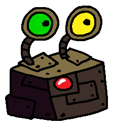
a note on the computer. in the current and very frustrating age of chat gpt & other plagues, i want to make sure the computer's characterisation reads NOTHING like those. its just this thingy that tags along with everyone else and keeps making very frustrated comments etno comes back (in the original does he come back normally? since there was bolok? and something exploding) with the papers and computer, turns out its been taking so long that everyone has just been sitting right outside the spaceship watching tv. gorgious grabs etno's dissertation and immediately laughs at his awful handwriting, and everyone tries to take a look before etno grabs it back looking offended. then they all set in with the tv and papers and take off - idk what causes it (idea: leftovers from the rockets bud used to explode the stork, he didnt realise these were still here), but the only part of the house that gets blown up is the actual new section (so the house just goes back to looking like s1/s2) on the ufo flying out, candy cries that she spent a lot of time building all this up (gorgious says "did ya forget youre not an architect?"), stereo cries that the library was in that section and he was only 2/3rds into reading all the books in it. etno points out that it doesnt matter since theyre leaving the house anyway. stereo says "okay but if we do end up back here anyways..." "no need to be pessimistic stereo" (notice that the entire library has a lot of books and the implication is that stereo has read this many books over like a month. again he just reads way too fast) bud reads his magazines while in the ufo. stereo has nothing to read, and so tries to look over both of buds shoulders to also read themswampthe fuel just immediately ran out (the ufo very sharply drops downwards), possibly due to the extra added weight from the block of computer guts thats with them now stereo and gorgious both, simultaneously, suggest getting rid of one another to fly the ufo again. gorgious then says "okay lets get rid of the computer then. And still get rid of YOU as well since youre clearly so rude". they keep squabbling, etno says the fuel just ran out but they ignore him. candy is just sitting there at the steering wheel, head in hands the computer says "etno is that really the people youre friends with? im quite offended by the blue one", etno says "well yes they can be a little rowdy... but i assure you theyre nice if you get to know them," (said at the same time as gorgious and stereo being at each others throats) bud just unpromptedly says "wait...!! if youre the computer, can i play games on you?" "I am not designed to run video games I run calculations on spaceflight physics as well as assist with lab work" "aww ok :(" then bud actually notices his surroundings and says "hey guys look! its that toothpaste factory!", stereo stops fighting (puts his hand on gorgious' mouth to shut him up) and adds "oh! this is where they produce the most cow dung!" bud "how is that related?" candy cries over being stuck on earth AND in a gross swamp with poop. etno says "we need some fuel and i know we can get some around here! alright ! gorgious! candy! you go collect the dung!", candy abruptly stops crying and becomes angry at the suggestion candy says "ARE YOU SERIOUS??" and gorgious also objects to this, says "hey woah whats the bright idea? why dont YOU go then genius?". etno replies "i have to, uhh, fix the spaceship... it was also damaged by the crash landing." gorgious points at bud who makes another cheap excuse of "i have to mourn my tv!!!", then gorgious points at stereo, who says "i just really dont feel like it. this stuff is nasty!" "and you have way worse trips to the bathroom, gorgious, if anything youre more qualified than we ever could be" then etno says "stereo is right. you, gorgious, would have the most tolerance to dealing with this situation. you, candy, would. uhhhhmmm. be pretty good at discerning the fuel." which is another excuse pulled out of his ass candy is still mad and says "im NOT going you CANT MAKE ME!!" gorgious teases her "what? are you afraid of some cow poo poo?" (ref to one of candys original lines lol) "OKAY GOODNESS no need to get on my tits about it!!! etno, if i have a heart attack because of all this, just know it will be YOUR fault" then they set off, candy does so very reluctantly. shes still just mad and complains about the dirt. then she asks gorgious if he could carry her, so she doesnt have to touch any of that stuff, and he says "i know you think youre the world's specialest princess but no." the chicken zilla [called chickenzilla in the poster] is still there also i dont remember what else gorgious does. i dont remember what candy does before the poop cave even??? when they get split off, gorgious is like "HEY WHAT THE HELL!!! [pause] eghh she'll be fine." and goes on - candy this time really panics about being in the poop cave and SPRINTS to the nearest available door, which happens to be nelson's apartment (the original calls it a "lair", lets do that but put it in quotation marks also. actually the manual also says apartment). candy is polite at first but nelson is still a creep (& candy is perfectly aware of what hes getting at and isnt pleased with it), but this time she doesnt take it! kicks him in the crotch, then while hes lying there in pain you can immediately select one of several items in this one screen to bash his face in. after that candy says "aww did i do that?", kicks him out of the house, then sticks around in it by herself, trying to figure out how to deal with the outside being utterly covered in crap while shes in the apartment she can comment on various oddities in here and feel disgusted at what nelson seems to be into. feels like this place is almost as gross as the poop cave outside, and it also smells of an unclear disgusting stench. she comments on one of the carpets with the mars symbol on it, with very audible contempt, "what a tacky decorating choice for your man cave." related thought. nelson's design is evidently an incredibly poor 3d adaptation of the bongo park bunny suit guy that they love to use in s2 (ie roger from abracadabra), but i dont want to implicate roger or any of the other ones in nelson's nonsense, so, while he references the original design to some extent, his face at least should be based more directly on his model instead. he actually tore the sleeves off the suit (so make them visibly torn). i dont think the butt window should be kept. theres a puzzle to construct a power washer out of materials that happened to be available in the house. candy uses it to wash off the poop from the poop cave and now its pristine shiny grey rock! she also sprays nelson's body with the same high pressure water jet ("i should get rid of this filth also...") then you still get the inflatable couch to get downwards, as in the original the powerwasher is like. an oversized (as much as you can manage with her giant head in the way) backpack thing, the water is in one of those really big ribbed water bottles, and the water hose can be tucked in the side of the backpack to not drag behind her everywhere. only the handle part with the button and the nozzle fits in though (see drawing) candy just keeps the powerwasher around the rest of the world and constantly sprays the ground in front of her to avoid walking on any of the dirtlater, once they reunite, candy brags to gorgious candy "look at my new power washer, i put it together all by myself out of some stuff i found in some house in a cave! it does WONDERS at cleaning this place up! the water spray here is really strong, youre not meant to spray people with it because it can cause some serious damage!" gorgious "good for you. youre not an engineer so im sure this is a big achievement for you, i can let you brag a little" candy makes an annoyed expression at this remark briefly but quickly switches up candy "anyway i encountered some ABSOLUTELY disgusting creep in here, but luckily i dealt with him!", shows gorgious a selfie (print from a polaroid camera) of her over nelsons body gorgious "wow candy! i didnt know you would actually kill a man!" candy "well i didnt actually do that..." gorgious "oh well. of course you wouldnt go that far" candy "...i just broke every bone in his body! [twirls powerwasher hose in her hand] i had to make sure he felt it!" gorgious (nervously) "wow uh thats. great candy" nelson is mentioned again in the next world, needless to say hes not having a great time if this was being made from the ground up, something like nelson wouldnt possibly have been here in the first place, but this is stupid invaders so i have to try and work him in anyway - i forgot what gorgious does for the most part at the chicken with the confederate flag. gorgious says "those americans! every time their solution to everything is to shoot it with a gun!". at the flag he comments "even i know anyone proudly displaying this is a worthless excuse of a human being! or a chicken.". he also says that the dead hen looks pretty edible, if it werent for probably being covered in crap the intro has cows, old macdonald had a house has both chickens and cows, ref the designs? (for the cows in this world too) gorgious takes the smtv and uses it, maybe to the guy who says "Are you certified ? I can't lend my gas tank to anyone who's not licensed.". so he uses a human disguise with a uniform and pretends to be employed. sorta like his s2 disguises with overalls smtv gags: a pig, a proboscis monkey (same as morice/maurice. s2 joke) holding throwable ball of poop/mud, big mean looking fly the redneck should look less like bud than he (is that even him there?) does in gaz gaz gorgious. where that legitimately just looks like a bud disguise shooting gorgious for some reason i also missed seeing like the entire dog portion (i got distracted in vc), i have no idea what happens here or what to change - in that pipe candy and gorgious go through inside (unsure when this takes place), instead of whatever the original does (harassment at candy's expense again), its also shown from the outside but candy is bragging again about her powerwasher being able to clean off everything. then she accidentally breaks a hole through the pipe wall with the water jet, and you can see her through the hole like "oh oops" (if this comes before when she gets the powerwasher then my bad, just move it to come after the powerwasher anyway i like the bit too much)
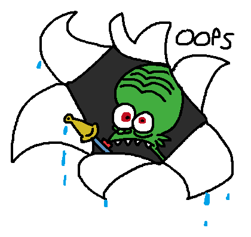
candy tells gorgious "what, you didnt bring any laxatives this time?" with regards to the cow being constipated. still has to go pick up chili and then heat it (gorgious says "great, whatcha gonna do now? you dont suppose you have another gun that shoots fire instead of water?") also candy comes in to gorgious talking to the cow like "hey sweetie do you have a phone number ?" etc. candy says "gorgious are you talking to the cow." "what? if you were alone in a room with a cow youd start talking to it too!" "Well I Wouldnt Start Talking To It Like That" the diving suit candy uses should fit her ridiculous proportions. probably has to temporarily leave the powerwasher behind when she goes into the aquarium i dont know what the bit with steve the diver and jeffrey the plastic treasure is (i havent actually seen them in the game), but she should tell them "oh--oh sorry, i hope im not interrupting your date" after you talk to both and they both threaten her (their threats are unchanged) [My name is Jeffrey, I'm the plastic treasure... Don't touch my diver, or I'll blow you to pieces.] [My name is Steve the diver, and I have a plastic ass... Don't touch my treasure, or I'll blow you to pieces !] fugu fish is the same. redrawn but same voice clip and everything, even the same subtitles (rut tout tuda tu don't pee on the floor use the comedore LA LAAA LA LAAA.), also you cant accidentally miss the cutscene its mandatory LOL. candy picks it up and goes "ow!!" because its spiky & shakes her hand after hurriedly putting the fish away the guy who eats the fish and dies is no longer designed racist, instead looks like a middle aged dad in a tank top. anyway hes dazed from eating fugu fish and spits it out, so it gets to live!!! candy decides to use the fish, instead of using the power washer on him and breaking all his bones, just to be nice to even a random stranger if you then click on fugu fish on the ground, candy says "oh im sorry poor fishie... i think water would be nicer for you!" and it can be picked up again. you can optionally (for no progression) release it into the big aquarium or its original fish bowl. or just keep it... in the elevator with the silly music (which MUST remain), the topmost button still launches candy into space, it does the ding sound & she steps out of it into Open Space, realises shes in Open Space and goes "oh! overshot a little bit" (game over reload back to the elevator) candy being pancaked is a necessary game mechanic. sure carry that over if you still keep fugu fish in the inventory up to meeting gorgious with the cow again, theres a little sequence where candy tells him "oh i also found this fish", he slaps it out of her hands ("we are not bringing a pet on the ship!!" "HEY!!!") and its not seen again. it just disappears for no reason candy actively refuses to engage with the cow poop bucket thing and forces gorgious to deal with it by threatening him with the powerwasher, then runs off to stand just outside the room. you hear an explosion sound and then gorgious kicks open the same door, holding the bucket with the "fuel" and also being covered in it, and clearly very annoyed. candy scrunches her nose and says "i can tell you got the... fuel.". gorgious inexplicably stops being covered in crap afterwards at some point, near the end of this world, gorgious complains about this experience and candy pokes fun at him for it gorgious "urgghghh. i completely lost my appetite because of all this Bull crap" candy "that was a cow not a bull! and so much for having the most tolerance for this, huh?" gorgious "Yeah Alright. bold words from someone who almost had a heart attack here" candy "well at least i wasnt claiming that i wasnt going to do that!" - etno, bud and stereo at the end of this world have just been hanging around the ufo doing nothing. stereo and etno are just sitting around on the spaceship, and bud is really bored so hes making a poop/mud snowman. stereo comments on it being gross ("what in the world are you doing bud" "eugh thats nasty!!") and then starts arguing (implied continuation of some offscreen argument) about whether this surface is poop or mud. right on cue candy shows up and obliterates the "snowman" with her power washer bud "NOOOOO I SPENT HOURS ON IT" candy "bud dont you have better ways to spend your time??" bud "but theres no tv! what am i supposed to do??!" gorgious "i dont know, have ya tried talking to people?" bud "im not 'intellectual enough' for etno, and stereo just keeps arguing with himself about what this stuff is!" immediately followed by stereo in the background going "its mud!" "its poop!" both stereos in their argument start shoving the other head down to the surface to prove to each other what it is. etno scoops up a sample of the ground in a test tube to study later, and he agrees that its mud, because it looks and smells more like mud, and otherwise he would have just scooped that up for the spaceship to begin with. the stereo who just won the argument cheers ("i was righttt ha hahaha!!"), the other looks really annoyed etno dumps the contents of the bucket in the spaceship's fuel reserves and candy complains about it candy "whyyyyy do we have to be flying around with actual crap in our spaceship!!! was there really nothing better? why did i have to be sent off to collect it??" etno "well manure makes for great biofuel, and it was very easily available around here, which, i would say, makes it worth the cost... if you dont like the smell i have some spare clothespins around here" gorgious "i wouldnt say it was THAT easily available. i almost got shot!!" also candy puts her powerwasher in the spaceship "well i dont appreciate you all sending me to a swamp to Die, but at least i got this nice thing out of it!!!". now they have to lug that thing around too then they get interrupted very abruptly by bolok and rush to escape also the factory doesnt explode. side note. dung fuel IS a real thing although it needs drying first to be effective, and it also pollutes the air badlythe citynew world, visually take heavily after how the city looks in you drive me crazy. also the implication is that it was the same one they were in in once upon a time, so reference the areas from it, like the tv store. make it more colorful to match s2 though, also cuz the weather is nicer at this point than it was in the episode since the aliens were in a rush to leave last time and etno didnt properly repair the spaceship, it ends up falling anyway, though not as sharply this time. they hide in an abandoned factory with the spaceship, and only tumble once when landing. etno inspects whats wrong with the ufo etno "seems intact... wait... zebras! the spaceship is missing a screw!!!" gorgious "always with your silly made-up kid-friendly swears! we're not going to get censored around here buddy, look, i can say ass and tits! boobs even!!! i promise you can swear like a REAL man" (stereo stares at him for swearing) etno "okay gorgious. you love saying nasty words so good for you" candy [who has just been sitting on her knees with the same dejected expression while the others were talking] "if this happens ANOTHER time im gonna LOSE IT" bud "...well hey! one screw doesnt sound that bad ! im sure we'll find it in no time!!" more dialogue, all the aliens decide to use the smtv & split up to find another screw the aliens use disguises throughout this world: - bud's is inspired by the one with puffy hair from clowning around and buy now pay later. and hes just an average looking guy - gorgious just walks around with no fashion sense, i think the one in the drawing absolutely needs some work though - etno is a hipster. i had him with glasses and a plaid shirt originally, but wound up simplifying the design as it felt more spacegoofy then - stereo is dressed emo/scene. i thought itd be funny to make someone emo and it was a fun way to play around with asymmetry on stereo - candy gets street fashion, kinda inspired by the disguise from operation guinea pig & some of the other s2 disguises like the biker one

(second pic i drew him weird. the third pic is edited s1 art. you can tell which disguise turned out my favorite) one of the smtv gags is just feral pigeons, another is them as rats forming a rat king with all their tails are tied together, third is sewer crocodiles given stereo's design, there should be a moment where one of the stereos lifts the hair off his eye, either in surprise or to get a better look at something - bolok appears throughout the world and hes the only one who sees through the disguises. he keeps hiding around in bushes and other areas, and repeatedly failing to actually shoot the aliens sometimes theres just random people who see bolok and are like "wtf why are you aiming a gun at that random person?" so he fails for that reason the guy from neighborhood watch should be in this world, just spying on the aliens persistently, hired by sakarin to do so. unsure how to work him in properly, other than that he works with bolok - [bud] starts from bud's section, he finds tvs in a store (the same one from once upon a time) immediately. of course he gets one and just lugs it around for the rest of the world also the tv is also a crt still. assume its the early 2000s here with corresponding technology (except for anachronisms where its funny) bud remembers about the screw though, and looks all over the ground for any screws lying around, proceeds to fall into a manhole, goes through sewer sludge (kind of a mazey section) and escapes super muddy but the tv is somehow unscathed. which is all that he cares about he also brags to every single random passerby that he got a new tv, and they go "ok..?" he encounters some ufo conspiracy nerds/ufologists and ends up joining their conversation to be really pedantic about how ufos actually work. he, of course, blurts out that hes been in one, and quickly shuts up and leaves when they actually catch onto that at some point bolok tries to aim at bud, but the bullet bounces off his tv and hits a bird in a tree. instead of dying, this random songbird gets up, walks towards bolok and swears at him (in in the kinda gruff voice thatd be done by charlie adler is what im imagining) so loudly that everyone saw that bolok was in the bush there, including bud, who immediately sprints off bud meets gorgious somewhere. whatever hes doing. switches over to his section then - [gorgious] not developed yet. idea 1: gorgious wanders in a restaurant & gets banned from it for his manners, or lack thereof. also from my friend:
after being kicked out the restaurant gorgious finds a perc and calls it street candy eats it and there's a psychedelic nightmare world he goes through grumpily wakes up and ends up in a place called the screw factory "So.. uhh, what do you guys make?" "lampshades"idea 2: gorgious ends up in a church praised for being an alien. and the praise very easily gets to his head. bud encounters him and tells him to stop wasting time at one point, some kids skipping rocks at the beach do a very poor job, and accidentally toss a rock backwards into boloks gun, and it explodes him instead of gorgious - [etno] etno gets the closest to just purchasing a screw from a store, hes in a really big line for the cashier but sees bolok in the line (whos here with his groceries trying to hurry the others along, hes not even aware that theres one of the aliens hes trying to hunt down), panics and tries to leave as non-suspiciously as possible. places the screw on a random shelf (as people love to put stuff they dont want anymore on the nearest available random shelves) and scuttles off etno sees an ad for a quiz show that happens to be happening today and joins it, because the prize is a screw but specifically for second place. he has to try and do well but not TOO well to get it. he fails because hes too smart and still does too well. this happens regardless of the choices you picked in gameplay, except if you pick so many bad ones you just game over for getting the worst placement one of the contestants (who ends up making second place) in the quiz show is the human girl from the movie. you can come up with a convoluted way for etno to reference the "intelligent life forms ?" for one of the quiz answers etno receives whatever his first place prize is and just hands it to a random kid once hes outside. "you can just take it kid, i dont need it...", kid goes "Wow thanks!!!!!!!!!!!!!!!!!!!!" while etno slumps off. meets stereo and just says "didnt get it." "aww alright" - [stereo] stereo has NOT gone anywhere significant because both heads keep arguing with each other where to go next. then they hear you can get "screwed" in a certain club & misinterpret it, so they agree to go there turns out candy is just already in the club (she got distracted and wandered here earlier), sitting on a couch and dreamily looking at the men, so stereo also sits down a moment candy "hi stereo... arent some of the men in this club stunning, like those girthy ones? wouldnt you agree?" stereo(l) "i can see where youre coming from here! but i AM into different kinda men..." stereo(r) "wuh--what do you mean men" stereo(l) "what?" stereo(r) "iiii thought we were both into women" stereo(l) "oh. no i never was sorry. anyway," stereo(r) "never?? but what about the lady from a few weeks ago??" (gets just talked over) (this is a ref to first date) candy and left stereo continue the philosophical discussion on hot men. right stereo just looks annoyed and eventually blurts this out stereo(r) "man i cant believe this!!!" stereo(l) "whats the problem??" stereo(r) "well nothing, only just that dating is gonna be so awkward now, one of us both will have to third wheel every time with no way to opt out of it!!!" stereo(l) "well we can figure something out im sure..." (right stereo looks annoyed again in response) stereo(r) "and anyway, remember what we came here for! come on lets go!!" so stereo gets up and goes to find a screw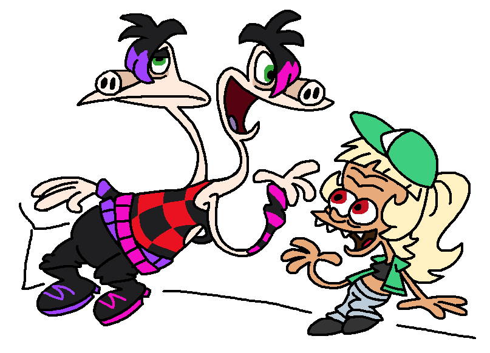
you have to try and find the right person to talk to about screws. most people just dismiss stereo or call him a screwball once you find the right guy (theyre also dressed up kinda emo-y) you also have to pick out the right drink for them by figuring out what they like, and they take it as flirting. they offer stereo to go to the bathroom to "get screwed" and stereo goes with them (candy just says "oh good for him!") in the bathroom the guy literally just hands stereo a screw. stereo immediately drops it in the toilet. guy offers a different kind of getting screwed (theyre into conjoined twins), stereo politely declines and leaves. and the other person just goes "oh alright, see you then!" like the joke is that theyre really nice and polite about it candy "well? did one of you have to third wheel?" stereo(l) "no what??? we got a screw but SOMEONE (glances at other head) dropped it in the toilet..." candy "OHHHhhhh right the screw. yeah! i forgot! well i gotta get going then" (sprints off) stereo also leaves the club afterwards, just so happens to wander into that warehouse(?) the aliens found in once upon a time, and all the jar aliens are still there. stereo retrieves his grandma in the jar, who is pretty dead. then they proceed to argue whether the jar is their moms or grandmas, and are like "how did you even manage to misremember this??" "YOU are the one misremembering this!!". they come to no conclusion from their argument stereo then encounters candy again and pokes her on the shoulder to get her to stop getting distracted window shopping, section switches to her now - [candy] you can just have her continue window shopping. eyeing some cleaning supplies in a store display, some clothes etc. you can just click on them for her comments and her complaints about how expensive they are you can look at some newspapers found around here, which plays a cutscene of her reacting to some stuff in it. ie "the aliens built the egyptian pyramids? pfff like we would be interested in some pyramids" (a random passerby goes "?" at the "we") "oh bongo beach babes is getting another 3 seasons? i know bud will be very excited about this" finally the newspaper talks about nelson. turns out he was found outside the toothpaste factory and got fined for stealing a mascot costume from bongo park [bongo land?], on top of having every bone in his body broken. the newspaper then describes him being in the hospital mumbling about women like a crazy person, in the exact same way as one would do about aliens, since hes now deathly afraid of that little green woman. candy is pretty pleased about this and says "serves him right" still distracted by all the shiny things around here, candy notices an art museum and decides to go there theres the art nerds from no account art, surrounding a random abstract painting, which candy can comment on as being incredibly pretentious. also candy just gets dwarfed by everyone in the crowd towering over her. theres a closeup shot of one of the art nerds who comments on the painting, then the shot just pans downwards to candy who just looks annoyed candy can also comment on every random thing strewn around the ground. she arbitrarily thinks a random can littered on the floor is also really pretentious (she thinks its something about the nature of impermanence & that its rather on the nose), but is excited about the artistic value of all the other litter and other random stuff (a shoe someone lost, literally just a rat, some chewed gum, etc) and analyzes them. then her reaction to the actual paintings is like "wow pretty pictures!". theres a guy stuck in the wall yelling for help and shes just "oh i love me an interactive art piece!" one of the exhibits is a very convenient perfectly sized antique golden screw on a pedestal, candy says "the antique golden screw... oh what an evocative piece of art! i think it represents.. [blinks] ohhhh waittt rightttttttt!! a screw!!!". the puzzle is to find a way to unlock it to access the screw bolok is just there pretending to be one of the paintings (framed hole in the wall with him in it), but you end up shutting him down while doing the puzzle, and candy ends up having no idea that he was even there. maybe involves moving some furniture around and blocking the hole? so she can get on there to access something higher up once its unlocked, candy grabs the screw, and takes only a few steps before large intimidating men show up behind her, saying "excuse me ma'am... you have taken an important art piece!" she runs off, with the museum staff after her. outside the museum, after running several streets (which is a gameplay section), she trips into a mud puddle, drops the screw and then a crow just shows up and steals it. she redirects the museum staff to run after the crow instead, and they do so. she leaves unscathed but also covered in mud & miserable - now everyones back in the abandoned factory, out of disguise, with no screw in sight. candy says "i got those guards off me but i dont think i can be seen with this disguise in the city again... You know. If we end up staying on earth for some reason". etno answers "no worries, im sure we wont..." stereo puts his grandma in the spaceship (still arguing about whether its mom or grandma). gorgious complains about the impending lack of space and suggests ditching the grandma again, stereo and gorgious start arguing but are quickly interrupted by bud talking about his tv, which of course he already named, ie judith in the s2 comics bud "hey! can i put elizabeth in the spaceship too??" [points at the tv] etno "im really sorry, bud, but theres really not enough room on the ship for that! with five-- six of us and the computer, candy's vacuum cleaner and power washer, and stereo's... unclear relative now! its already getting quite cramped in here! i know i should have told you beforehand that a tv wouldnt fit in..." computer "i calculate there is no way to fit a tv in here without crushing someone" bud "[cries] im so sorry elizabeth im gonna miss youuuuuuu" then etno notices something on the tv and says "oh look! a screw", unscrews it from the tv which instantly falls apart in buds arms. bud cries even more like he just lost a family member, but the screw perfectly fit the spaceship candy asks if she can fly the ufo and everyone (including bud) says NO!! in unison, not allowing her after the last 2 crashlandings. gorgious volunteers to fly it instead then they hurry to take off again because they thought they saw bolok... it was actually just an unrelated tall and rectangular guy checking the abandoned factory gorgious is flying the ufo, and candy is still grumpy and mumbles that she could have done a perfectly good job flying it too. then gorgious carelessly crashes the ufo into some electricity towers, and the ufo falls down into a big hole that just leads to hell for some reasonhell hoteleveryone is sitting in the ufo shocked, and the computer concludes "at this rate theres a 0.0000024% chance that you are even making it off this planet". candy, as she predicted, loses it and cries The Death, who is a gangly cloaked guy with a skull mask, shows up and says "welcome to hell, new visitors! i am The Death--" candy "w-- what ? what do you MEAN???????" death "no no no! before you get any ideas, youre not dead! im not even actually the grim reaper, im just a janitor here. i thought my nickname and outfit would be cool" gorgious "well *I* think that your nickname and outfit are just pointlessly edgy" etno "but weve already been to hell! its not something i would like to put up with again! i would like to just get out of here and get us back to our home planet!! i just need to fix the spaceship again--" death "well, if you wanna get outta here, you will have to negotiate with THE Devil and convince him to let you guys out. hes just aaaaaaall the way up the Hell Hotel" [points at its top, camera pans there. lightning strike effect] gorgious [pulling up nonexistent sleeves] "LET ME AT HIM!!!" candy [stops gorgious in place] "i know you think youre the world's manliest macho but no." stereo (l) ">:( well im not staying stuck here again!!! i'll have to go to that devil and show him whats what!" [gorgious looks annoyed at this being almost the same as his idea, but not being shut down] etno "like the janitor suggested, i would just negotiate with him! i consider myself having enough negotiation and communication skills to get us through this situation." stereo (l) "could you be any less wordier?" stereo (r) "well lets just say we work together then, etno? yeah? you know, three heads are better than two?" (l stereo looks at him annoyed) etno "good idea, its a deal then!" death "all five [l stereo: "six.."] of you are free to stay in a hotel room for now. youll be GLAD to hear that its totally free! and it has a tv!" (bud is very excited to hear this) also they confiscated the spaceship for now or something. i think THE devil is so resistant to being negotiated with because hes interested in the spaceship personally also THE Devil is a different guy from the guy in party time in hell, who went to heaven that time. that said all the devils are designed very much like in that episode, aside from all having clothes here. same kinda black horns and yellow sclerae, with skin mostly colored in shades of red and orange (though there was the guy in the episode that was just borderline #ffffff white too) the death is also just a devil but you can only see it with the clawed hands (which are, incidentally, also borderline #ffffff white) and the same yellow sclerae. also hes wearing jeans underneath his cloak. instead of wielding a scythe he just has a broom, of course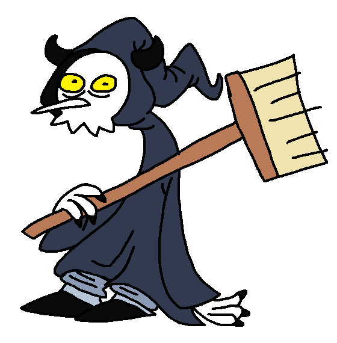
- visually this world matches party time in hell (the color scheme of the world is very greyscale) and the hell hotel itself is really tall and misshapen. the gameplay involves stereo and etno bud, candy and gorgious stay in their hotel room, they took the computer here too and just set it on a table in front of the couch. you can pick up a few things in here, and keep checking back in to talk to the other aliens. etno and stereo respond to them differently obviously. i think this should become mandatory at points, have not decided why theres a tv but the tv programs SUCK in hell so bud isnt too pleased. he spends most his time watching tv anyways, and whining about it gorgious really dislikes the quality of the food here, its all severely burnt. he gets a plate of Something that resembles charcoal more than it does anything edible. candy asks him "are you eating actual charcoal?" while hes breaking his teeth on it candy is just upset about the situation and cleans to take her mind off it, but theres only a broom cuz they didnt let her take the vacuum cleaner to the hotel, which upsets her further ("how am i meant to clean with this?"), and theres cobwebs around the place and other dirt thats difficult to clean off. shes also idly pondering "maybe that computer was right, are we ever going to get back to our planet like this..?? i would rather just be back in our house at this rate, i havent finished decorating it anyway..." the computer tells etno "is your plan working now? you might as well get back home and put me back in my original shell, this one is quite cramped and i would like some breathing room back. this is clearly not going anywhere" to stereo it says "where is etno? i dont respect any of you people, you always squabble and make jabs at one another". right stereo replies "oh thats mostly just gorgious actually. i promise the rest of us arent AS like that...", left stereo "yeah like we never argue. especially not the two of us!", right "stop disproving my point!!" at one point, a specific show on tv becomes kind of a hit with the aliens here (AND the computer), even though it also kinda sucks. its just a cartoon parody*, like in toon in drop out, but with devils. the goofs start commenting on its intricacies like its anything that matters, and acting like its a good show. etno and/or stereo can obviously see that it kinda sucks and decline watching it *ABSOLUTELY NOT a parody of that cartoon about a hotel in hell. there will be no such thing here - the hotel is large and mazelike. you have to do puzzles to progress to get to the highest floor where the devil resides. you can encounter random devils that work here, and people staying in other hotel rooms who are mostly here cuz they signed a contract. the big nosed guy from party time in hell that had a few s2 cameos is also there the gameplay gimmick is that you can switch between playing as either etno or stereo at any time (you can also have them meet each other and talk to each other). theres puzzles that only etno can solve & puzzles that only stereo can solve theres a button in the hud that can switch current player character, with a headshot of either etno or stereo, and it changes accordingly with disguises as a reference to etnos "Ohhhhhh....where in the hell did I leave my thermonuclear bacon and eggs?". he can literally find it here in hell. "wait!! there they are!! my thermonuclear bacon and eggs!!!!! how did they even get here??". stereo has this to say about the same item: "did someone forget their breakfast here?" at one point etno and stereo use the smtv, they just disguise as devil employees for some puzzle. etno had a similar looking thing at the start of be my baby if you want a visual ref they count enough as three people so one of the smtv gags includes the cockroaches from oggy. stereo is marky stacked on top of dee dee, etno is joey. i didnt even consider the "devil" oggy thing (tweet, on wayback machine so you dont need a twitter account) connection when i did this, i just thought itd be funny to do an smtv gag like this with three people another one is cerberus and etno is the third head and obviously stands out. another one is them as angels, stereo gets the stereotypical(lol) pretty winged one, and is scared of etno who is the damn wheel
also while in disguise they do encounter the death doing janitor work, he tells stereo and etno "oh, another janitor? and the other.. wait a minute! i saw you two [l stereo: again. three]-- whatever, i saw you down there! i dont know what youre trying to achieve with these outfits but good luck i guess" the hotel has a casino in it. this is there because i thought of hotel delfino from mario sunshine and how that had a casino. a bunch of people are there because theyre in debt to the devil and are trying desperately to gamble away money to pay him off. the casino also has a bar and so a bunch of other people are just there really drunk, and they dont even realise theyre seeing an alien here reference the devil oggy thing intentionally, with one of the random devil employees that just looks a lot like him - the devil's name is literally "THE Devil". the other devils are just devils lowercase. THE devil has the THE capitalized and theres a plaque on his desk that says "THE Devil", and he objects to etno reading his name out without emphasizing the THE once etno and stereo get to him, he still has them do some other tasks, before he can be really convinced to let them out of here. as i said he has an incentive to keep them in the hotel because he wants their ufo for himself, for whatever reason stereo is clearly very scared of the devil, contrary to left stereo's threat at the start of the world, and is actively shaking while the devil is talking & etno just looks annoyed after these tasks, the devil says "[something something] ...you two will be able to leave". etno and stereo both object to the other aliens not being included, and right stereo also says "THREE", left stereo to him smugly "nah, youre clearly just not included". also that how would they leave without their ufo? they need some more work to convince the devil to also let bud candy and gorgious out, alongside their ufo, and finally persuade him successfully at the end of the world they get out of hell in their ufo. however, just outside the big hole, bolok finally gets ahold of them, and gets them and the spaceship to area 52 - an aside about the world's origin!!! reflecting how the original had 2 cut worlds between the swamp (world B) and area 52 (world E). Script/VAR_.TXT also defines a character list with these at the end, theyre only in french though world C defines a bunch of employees of something, The Death, "LA DAME PIPI", a big woman with a tiny dog i guess, soviet elephant (really), reception employee?, just "katia" world D defines mostly a bunch of animals (parrot, tapir, bat, hamster and barman's dog), aforementioned barman, a groom which i think means bellboy & theres a receptionist. and the. hells people? which is where we got the idea for this
click to view an excerpt from var_.txt
#DEFINE PERSONNAGE <L'ELEPHANT SOVIETIQUE> "" #DEFINE PERSONNAGE <L'EMPLOYE DE L'ACCUEIL>"" #DEFINE PERSONNAGE <LE GARDE> "" #DEFINE PERSONNAGE <LA DAME PIPI> "" #DEFINE PERSONNAGE <EMPLOYE 75> "" #DEFINE PERSONNAGE <EMPLOYE 45> "" #DEFINE PERSONNAGE <EMPLOYE 76> "" #DEFINE PERSONNAGE <EMPLOYE DU STOCK> "" #DEFINE PERSONNAGE <LA GROSSE DAME> "" #DEFINE PERSONNAGE <LE PETIT CHIEN> "" #DEFINE PERSONNAGE <KATIA> "" #DEFINE PERSONNAGE <LA MORT> "" #DEFINE PERSONNAGE <LE SLIP BAROUDEUR> "" #DEFINE PERSONNAGE <LE HELLS SUR LE TOIT> "" #DEFINE PERSONNAGE <LE GROOM> "" #DEFINE PERSONNAGE <LE RECEPTIONNISTE> "" #DEFINE PERSONNAGE <LE PERROQUET> "" #DEFINE PERSONNAGE <LE TAPIR> "" #DEFINE PERSONNAGE <LA CHAUVE-SOURIS> "" #DEFINE PERSONNAGE <LE BARMAN> "" #DEFINE PERSONNAGE <LE CHIEN DU BARMAN> "" #DEFINE PERSONNAGE <LE HELLS MECANICIEN> "" #DEFINE PERSONNAGE <LE CHEF DES HELLS> "" #DEFINE PERSONNAGE <LE HAMSTER> ""area 52at the start, when theyre all hauled in there gorgious "anythings better than literal hell!" stereo(l) "i wouldnt say that! dont you remember that evil little man?" [pointing at sakarin] stereo(r) "he tried to blow up our planet!!" bud "and he wants to dissect us!!! like mad scientists do in the movies!!!" however the rest of this goes, its important gorgious still says "Next time I see him he's gonna regret the day he was hatched !" about sakarin. stereo is pedantic about it saying "actually humans dont hatch from eggs!", gorgious replies "i couldnt give less of a rat's ass how they reproduce!!!!!!!" bud and candy use the smtv in this world, as theyre the only ones left who havent had more than one disguise yet - [stereo] stereo escapes from the pod cuz they overlooked him and thus just forgot to knock him out, and he accidentally escapes in the middle of arguing about which of both of him deserves to be in here more than the other he still has mean comments about his friends ("hey.. you think they cant hear us?") (l) "that candy... always ordering us around to clean stuff! and then she just cleans everything anyways!" (r) "and always picks the worst possible time to vacuum the floor while we're watching tv!!" (l) "but! theres a positive! shes always cooking us stuff!" (r) "ok but i can do that too. maybe even better" (l) "but have you??" (r) "gorgious is so rude! isnt he supposed to be friends with us?" (l) "and he always makes such a mess too, especially of the fridge..." (r) "and what the heck does his name mean anyways? he aint exactly pretty!" (l) "its CLEARLY because he GORGES himself on things!!!" (r) "but what does the name sound like?? you havent heard of the word 'gorgeous'??" (l) "its not even spelled the same!!!" (r) "etno thinks hes so smart huh? i could make a better spaceship with my heads tied behind my back!" (l) "and he wastes so much time studying these ugly humans too.. wait a minute thats not how that saying goes! its HANDS!" (r) "it still makes sense either way you dolt!!!" (l) "its not YOUR heads PLURAL, im a different person from you!!!" (r) "uuugh ok shut up" (l) "bud's nice but i wish he would do literally anything with his life, he wastes so much time just rotting on the couch watching tv!" (r) "hes older than all of us and acts like a teenage boy at that!" (l) "i think he should find a hobby..." (r) "what, like you?" (l) "...reading? arguing?" (r) "arguing with me isnt a hobby!!!" (l) "yeah speak for yourself" (r) "Wow look, a space brick!" (l) "how do you know what that is" (r) "havent you read about space bricks in that one encylopedia?" (l) "no i was not looking at the same pages you were" [i dont remember what the "its too heavy!" comment was on] (l) "this ones empty!" (r) "are you sure there isnt an invisible alien in there?" (l) "next time if YOU describe anything empty im going to start talking about invisible aliens" (r) "jeez ok" before leaving the room after clicking on at least one of the aliens, stereo does say this (l) "okay but they ARE still my friends, we have to save them!" (r) "they are MY friends!!" (l) "theyre MY-- okay ENOUGH arguing!!! lets compromise [right stereo smirks]. OUR friends. we have to rescue OUR friends" (r) "...even the annoying mean ones! because we're nice like that, arent we?" heres a space brick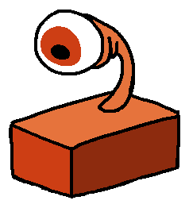
stereo complains that the elevator's jokes suck terribly, and then both stereos are surprised they actually agreed with each other for once. then the elevator makes a particularly bad joke and both stereos simultaneously go "shut up!!!!!!!!" right stereo actually finds the crap sandwich joke funny as hell, but left stereo thinks it also sucks bad in the dissection room, professor helmut (make up a design for him; theres a bunch of scientists in space goofs to reference the designs of) is now there with sakarin candy just keeps pestering helmut about alien estrogen ("how expensive is it? do i need a prescription? can i still keep getting it if im on another planet?" and other rapid fire questions). she actually sees stereo off in the distance, and starts dragging this out on purpose and rambling about stuff that doesnt even have anything to do with her situation, conveniently giving stereo enough time to save her. helmut keeps losing his mind at this and is unable to shut her up helmut collapses to the gas instead of igor. similarly, stereo yanks the wooden leg off of him to use it elsewhere the sequences where stereo just walks through a really big background for a million years with nothing else happening should be cut down - [candy] she gets up and goes "oh, no alien estrogen then. would have been nice but whatever, i can live without it [shrugs] and i wouldnt want it from anyone this rude anyway! now where am i." and sees the fly then the fly is pretty much the same! and also largely unchanged visually, despite not closely matching any of the bugs in space goofs. candy sees theres a big damn fly and quietly says "...a fly?", then decides to be polite and it pays off have more misinterpretations of what the fly is saying (along the lines of "what do you mean spaghetti??") and actual selectable dialogue options candy shouldnt refer to the fly as "mister" or "sir" with 0 hesitation. only have her do that after some dialogue where i guess its implied that the fly introduced himself. i just dont think candy of all people would just assume the gender of someone, or do male defaultism, even for a fly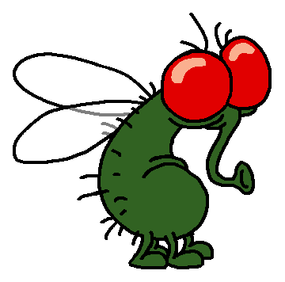
candy goes to john the robot's house to find some money to pay the fly, and gets kicked out, then comments "and why did he have that.. pipe anyway? gross". nearby she finds the pink robot and a remote controller. so she uses it to control the pink robot (while knocking it into several walls on the way to the house by accident) just to humor john, tosses the remote, then sneaks into the house while the robots are distracted (literally banging into each other) to steal some money and dip then candy quicky closes the door behind her, but keeps taking a peek at what the robots are doing. its not actually shown what theyre doing (you mostly just see candy's expression), but you can hear audio of loud machine creaks, and something like the funny machine sound they used for a worms armageddon fanfare, and other such things. and she looks absolutely bewildered, says "is this what you people are into?? ive seen better on tv and i wasnt even into it..." also the pink robot stays entirely silent and candy doesnt try to talk as it & just releases it into the room. i want to avoid any implication that candy is directly involved in this act, like she was in the original IM NOT actually sure this is possible to include given how this chapter is set up, so maybe not (unless its just from backtracking after getting the fly the money), but later you can come here again, the living room is empty but you can go upstairs to see the robots just in the bed with one smoking - [gorgious] it was sort of confusing to navigate here. so make it not confusing near the start of his section gorgious can eat something and turn into bones & yeah sure keep that. looks like when he just peeled his skin off his skeleton in ufo (the episode) reimplement some of the cut dialogue from the furniture, when gorgious threatens to turn the lovely little stool into a pile of toothpicks (was this in gorgious' section?) wildly different looking rooms that are just alien prisons. you do a puzzle to actually start freeing the aliens!! optionally you can cartoonishly incinerate some with a big obvious Incinerate Them button & gorgious goes "aw what the hell". but the ash piles just blink and slink away offscreen a big swarm of aliens goes and piles together onto a ufo thanks to gorgious' help, so numerous that gorgious cant get in. also even he cant let himself actually just up and ditch his friends like that one of the captured aliens is the same type of guy as the musical chairs robot, different one but talks the same. the aliens that were used in ALIENS666.dcr appear here as well (ALIENS666.dcr is a shockwave game that was on the stupid invaders site, i curated it for flashpoint and plan to submit it soon) these two are the ones that had renders in ALIENS666 so they actually talk, the rest are just silent cameos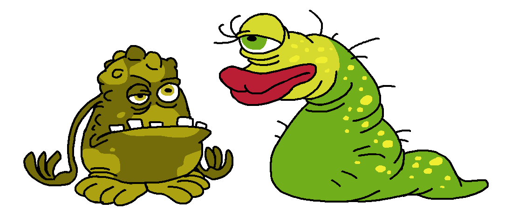
(da originals lol. i had to make up the entire lower half for the green lippy one)

these two (and the robot) talk and thank gorgious for freeing them before going on the ufo. the green lippy one gives gorgious a big kiss for it, naturally, and says "thank you for saving me darling! you are a handsome one, i hope we can meet again" then the ufo takes off and leaves the planet through a hole in the ceiling. gorgious is very pleased with himself for freeing so many people, pats himself on the back for it and then suddenly snaps to "sure wish i could have been there too!!! not that i can just take off without my friends though." - [candy] there didnt seem to be any dialogue for candy giving the money back to the fly afterwards, so add some dialogue for that. she apologizes for taking so long and cant tell if the fly is upset with her lateness or not, but the fly takes the money, does a nice gesture and takes off the teleporter puzzle shouldnt be stupidly obtuse also, or it should at least hint at the fact that youre meant to be doing math. "You must reach the 21st to be teleported! Begin with the teleporter 1, that will send you to the 2. Add up 1+2. You have 3. Enter in the teleporter 3 which sends you to the 5. To discover the next teleporter, add the two previous ones. 5+3=8. Enter in the 8. 8+5=13. Enter the 13...then 13+8+21!" what are we even doing if you get teleported into the same spot candy complains about it - [stereo] the simon says sequence doesnt take 5 billion years and doesnt waste so much time animating every single button press right stereo does all the button pressing, and left stereo tracks it (with his photographic memory) and goes "I CANT BELIEVE YOU SCREWED THAT UP" when you get something wrong, and then they start arguing over whose fault this mistake actually was, cuz left stereo sure did nothing to actually help on subsequent failures theres different dialogue. after the second failure he says "AGAIN?", hes just really disappointed after the third failure, and after the fourth he concludes right stereo must be screwing up on purpose. after the fifth he just autocompletes the simon says by literally grabbing the right arm with his left and using it to press the sequence properly (r) "thanks genius. you know you could have done that earlier instead of forcing me to memorize all that?" (l) "i was trying to see if your memory is still up to speed. i guess not! you have some memory exercises to do once we're back home" (r) "but what if i was doing all that on purpose, just to mess with you specifically?" (l) "well if so, i guess you succeeded! [sarcastic] congratulations good job!! im still putting you through these exercises later" (if this wasnt set in like 2000 i would have added "is this what the people watching these mobile game ads feel?") the original simon says order from what ive seen is red blue green red yellow yellow red yellow green yellow, retain it? the space brick, when used, suddenly tells stereo "thank you. you have fulfilled my true life's purpose. i am eternally grateful to you." and both stereos in unison go "WHAT?" - [bud] guy hijacks ufo. i forgot the specifics of what happens, but now he comments that it sure is full of a lot of stuff. he starts throwing random stuff out of it, discarding the vacuum and computer and stereos grandma and the dog toy they had in the ufo and etno's papers, and conveniently also throwing the smtv at bud. which i guess requires the scene to be changed so bud is actually present for the hijacking somehow unsure if we retain the random long pause before the "Ah its nothing.I'm always happy to be of a service and what not !", def change the "are you the idiot who was yelling like a woman ?" bud retrieves the smtv and carries it around for the rest of his sections in area 52. it just disappears into his hammerspace whenever itd be convenient (i checked once upon a time, and etno had it in his hand for most of the time, and it only disappeared in a small handful of occasions) since the smtv is also a suitcase when packed, bud also just puts the computer and grandma into it, he thinks hes rescuing them. now the computer's eyestalks peek out of the smtv and it still gets to comment on things how much do we commit to the snail in the maze bit? i feel like it can be conveyed similarly in far less time if it eventually cuts to bud literally just being asleep on the snail because its been taking forever, then it dumps him on the floor randomly waking him up, still rattles off "are you ok you werent too scared i hope that wasnt too fast for you ok im outta here see you later bye" and drives off really fast the whole maze is still littered with golf balls, and the end of the maze has a random golfer robot npc whos just like "hey guy. you wanna play golf? no? ok" i forget what bud does with the little green blob aliens but it should probably also be less meanspirited. unless its funny bud uses the smtv to disguise as a robot to deal with the other robot in the giant fan smtv gags: the false sakarin from once upon a time (that showed up in the warehouse), a lab rat, a stork with buds face bud tries to do speak like a robot very poorly, just doing weird intonations and occasionally going beep boop, his voice isnt even filtered or anything. at points he forgets to even do the robot voice, then catches himself and repeats whatever he was saying but with the robot voice he convinces the worker robot to go on a strike with his coworkers. takes his shoes like the same way but the robot still lives
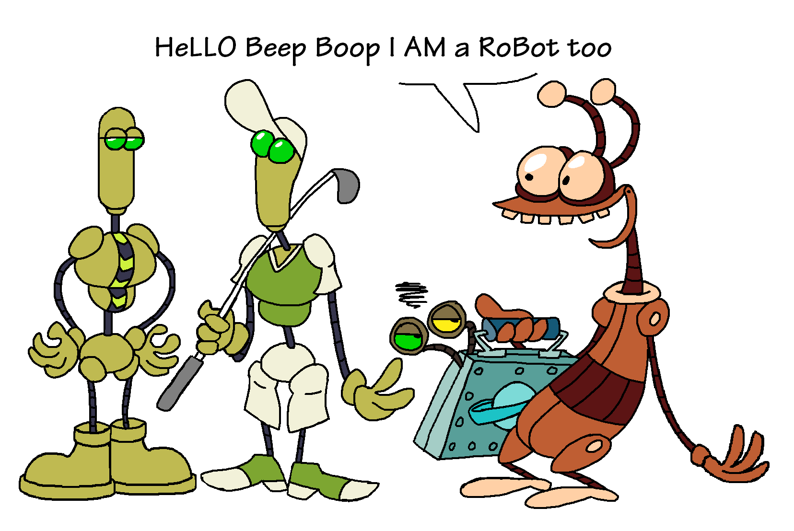
the computer later tells bud "your robot impression was completely inadequate and i would like to ask you to never do that again" you dont wander in the desert for 15 billion years!!!!!!!! at the start of the sequence, bud finds a very convenient map at a booth, selling maps of the desert like its some sort of tourist destination. also a frilly parasol that he gets to carry around to shield himself from the sun (it still doesnt help a lot) the map doesnt tell you your exact location, so you have to identify it based on landmarks matching between your location and the map. the map isnt a one to one representation of the desert grid but you get the gist of where stuff is the desert screens are also at a less of a top-down angle, you actually see the sky. also periodically bud complains about the heat - [etno] for the toaster's visuals reference the toaster gorgious ends up in in small you said. tweak etnos line here to avoid some silly repetition: "according to my brilliant powers of deduction, i would say its about 300 degrees celsius, and rising. therefore it would seem that i have.. 3 seconds before i burst into flames" you are given exactly 3 seconds after this line to click out the toaster (he frantically climbs the ladder out), if you miss it he does burst into flames, and then turns into a little pile of ash with eyes & blinks the random sculptgl looking rat (it is a rat) that gets rescued, says "thanks dude" and never shows up again is unchanged, aside from obviously being made to fit the space goofs style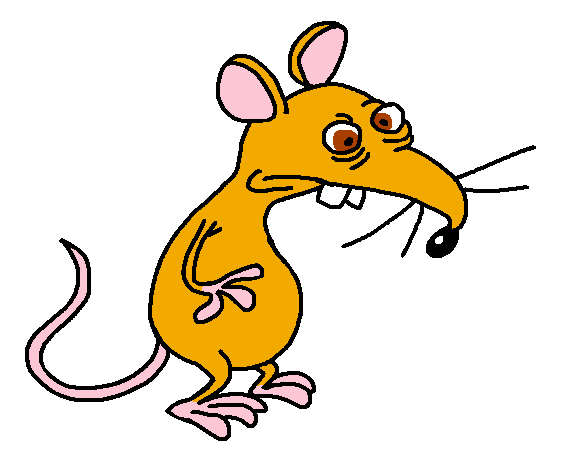
i forgot what else etno does - [bud] while getting down, instead of cutting like 5 meters on the rope that somehow prevents bud from splatting on the ground and dying instantly, elsewhere in the desert you can find the skeleton of a dead skydiver (next to an X on the ground), with a perfectly preserved parachute. this area is labeled as a tourist landing spot on the map. you steal the parachute, then go back and descend with it you can try to jump down the hole without the parachute anyway. bud says "theres no way im gonna break my knees!" and jumps, the camera doesnt move to show where he went but you can hear a crack sound and OWWWWW and then game over - its very strange that the aliens at the end of each of their sequence just gather in the same room but behind these glass capsules and just. stand around here and do idle animations? so do something else no more glass capsules, they decide to stick around in the same room and sit around on the floor until they can all reunite before proceeding, every time another alien gets in everyone else is just having a new conversation or arguing the first alien to get to this central room (i forgot who, candy or gorgious?) cant figure out a way to proceed, notices theres other ways leading here and decides to sit and wait if anything will happen. that or the shot of them getting there cuts early until you do the other's section. either way they end up arriving almost at the same time as one another candy and gorgious sitting around have a conversation at some point gorgious "cant imagine why they woulda wanted you for your brain! that thing must be just knocking around your big empty head" [knocks on her head which makes a somewhat hollow sound] candy "okay? and what do you have in there, a walnut?" gorgious "hey, now youre just making me want to eat my own brain!" candy "[sighs] i know youd love to, but i would rather you stay alive instead, actually" when stereo gets in, he brags to candy that he saved her, and the stereos start arguing about which of them did it & candy interrupts them candy "ok ok calm down! how about both??" stereo(r) "well that wouldnt be a very satisfying answer!" candy "would it be wrong though? actually i just want you to stop arguing because youre giving me a headache" stereo(l) "ok. well to be honest hes giving me a headache too" stereo(r) "HEY!!!" - once bud gets in and all the aliens are together, bud retrieves stereos grandma and computer from the smtv (suitcase) and hands both to stereo, and the smtv to candy because everyone else decided she will be sneaking out in disguise to do, uh, something. itd be a new added section i think shes on the smtv chair like "why do *I* have to do it??", the others come up with excuses and etno pulls the smtv lever for her candy disguises as one of the lab workers (kinda gender ambiguous), just carrying around a totally-not-suspicious suitcase, which is the smtv. it gets taken which is obviously an issue, and sakarin starts looking into it and analyzing it. i was gonna say its retrieved in the ending (bolok would just throw it to the aliens?), but i remembered that candy would need the disguise disabled first somehow, which requires access to the smtv, so idk. whenever & however they get the smtv back, candy is out of disguise by the next section smtv gags: big cartoony bacterium like a spore cell, jar with preserved eyeball (still red), Tall Sexy Woman with a halloween costume-type scientist outfit (the original idea for the second one was the weird candy lookalike from ALIENS666.dcr (64.swf and 88.swf), however turns out its actually entirely unused, so it would be an extremely niche reference nobody would ever get, considering the way to rip assets from shockwave games is a lot more obscure than flash games & nobody even really knows about this shockwave game to begin with. that said put the weird lookalike in the crowd shots earlier in the world anyways) the bear that was also in zero stuff is somewhere in this section, guarding something so you have to distract it. in fact the disguise helps here, and she has to act nice to the bear to get through - back to the section that was in the original, its important that candy still effortlessly carries around a huge tank. its like one of the only good jokes with her in the original foreshadow bolok's sudden redemption arc a little at the end of the game stereo is the only one that was in that rocket when it took off (he went in there arguing with himself and didnt notice nobody else entered), and naturally the only one that got sent off earth. as funny as it is (and more of what id expect in how mundane it is), i have to retcon the s2 comic where stereo gets sent off by accident more potential details on the ending from my friends. i dont remember the specifics of the original ending myself so see this insteadfor the ending with stereo itd be funny that the reason why the other aliens didnt instantly go up to the other end of the rocket and only stereo (assuming the whole thing with the bomb and the bottom half of the rocket is still generally the same) is just because stereo Already went up to the other end of the rocket just to get some peanuts from the mini fridge on top or something stupid like that while the others didnt notice at alli think the ending should have like stereo get up to the capsule while everyone is in the ship and when the bomb is falling bolok freezes etno bud candy and gorgious so they survive the blast and ofc bolok also survives bc he's bolokbecause of the rocket, area 52 gets exploded, conveniently sending the other four aliens back to their house. shows them falling into the roof from outside, with the house shown in its usual angle, but the part of the house that the game introduced is obviously missing the house now just looks like it does normally in the show, but, where the rooms of the added section of the house originally were, it now has some wallpaper (covered in soot) stuck on the walls & hanging doorways that you can fall through to end up outside. there are charred markings on the grass where that part of the house was also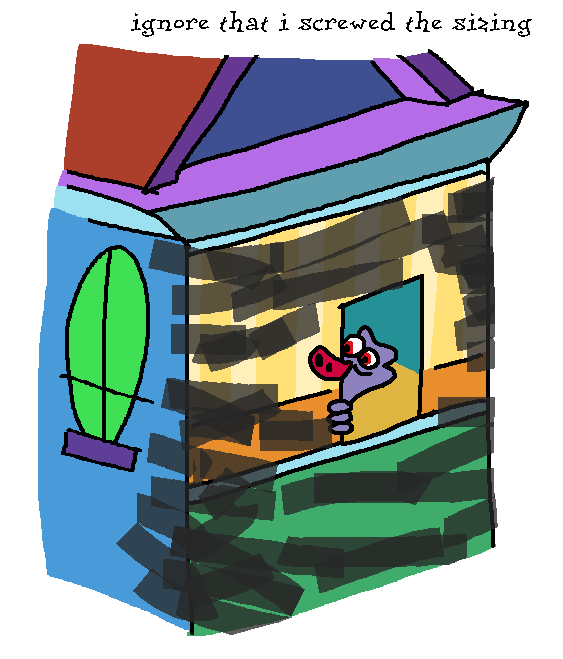
the aliens end up in the attic, and they only then realise stereo isnt with them. bud starts looking for stereo everywhere, lifting the couch and the tv and also the other people to look under them and everything. etno says "im sure he will be back in a few minutes...", then a postcard flies through the window from zygma b. everyone rushes to take a look the postcard has a really annoyed looking stereo on a lounge chair (both have the exact same annoyed expression, one is just strangling the other's neck, the other one is doing a v sign and also sticking his tongue out) and text that says "wish you were here!" with scribbled on "no seriously". it also shows the space brick on another lounge chair, no explanation how it got here. theres wreck from the rocket crashlanded in the background, and the depiction of the planet here matches how it looked in welcome bud says "woaw stereo made it back!", candy and gorgious are just shocked, etno is also shocked and then gets frustrated that only stereo made it there. the house is then seen from outside, you can see etno walking towards a hanging doorway, tossing the postcard through it out of the house in frustration (bud and candy both go "etno!!! why did you have to do that???"), and going back gorgious then says "well. who's to say stereo won't turn up anyways? and he better do that!... hey, now that theres some extra space on the bed, can i sleep there too instead of this dingy bathtub?" and everyone else in unison says "no!!" etno "alright that is it! i am done fooling around! i will now be making as many spaceships as it takes to finally get us to zygma b too!!" candy "you do you etno... i need to go fix up the house! good grief what a MESS!!!" gorgious "i havent had a proper meal in DAYS, do you even know how that feels? im outta here!!!" bud "well good luck with your spaceships... hey i wonder whats on tv? how many episodes of my shows did i miss???" and they all leave in order. iris out on etno's annoyed expression credits show pictures of what the characters from this game are up to now. non conclusive list: - john the robot with robot babies, as i mentioned before - fugu fish in the aquarium (if you put it there at least) - nelson still in the hospital, being scared half to death of a nurse because shes a woman - the museum staff finally placing back the golden screw, after they took it back from the crow (one of them is holding the crow by the neck) - sakarin, alongside igor and that bear, getting arrested again but by aliens this time - THE devil doing paperwork or something, theres probably a better idea that will come to me once the hell world is more developed - the fly doing taxi service in the city - bolok getting a single thumbs up from his dad. all he ever wanted - area 52 worker robots (the one whose shoes bud stole is damaged but alive, the golfer one is just there) at a party with a banner that says "area 52 exploded we're free!!!" - guy who hijacked the ufo crashlanded on the moon because the Same Exact Screw came off again the final credits pictures are of the aliens and have dialogue - bud and gorgious, with entirely too much pizza boxes, watching tv on the couch "i cant believe i just barely missed the biggest event in bongo beach babes!!!" "at least i havent missed free pizza weekend!" - etno working on a spaceship blueprint, but candy pesters him, poking at a listing in a magazine with the vacuum cleaner from s2 "etno can we PLEASE get this vacuum cleaner? my old one is gone!!!" "not now candy! im working on my next spaceship!" - stereo also already working on whatever spaceship he used in other world champs "look at that!! told you, i could make a better spaceship!" "you can say that ONCE this spaceship brings our friends here!"rewritten manual descsGoing on a picnic in space (and never making it there), five bumbling aliens from the planet Zygma B have crash landed on Earth. While waiting for a way to get back home, they hide away from humans in a house up for rent, while constantly trying to get rid of pesky tenants. Unfortunately, as soon as they finish working on a spaceship that will take them back home, the mad scientist Dr. Sakarin gets word of them, spying on them from his underground laboratory at Area 52. Looking to capture the aliens and use them for his experiments, he enlists the help of the bounty hunter Bolok to hunt them down. [it is supposed to be "Zygma B", unsure if with hyphen or not. id like more sources but im aware its in the first s2 comic at least in french, a dutch source, another french source with a hyphen, french youtube also with a hyphen] ---------- Etno Polino: Etno is the de facto leader of the group, intelligent and inventive. To his credit come such great contraptions as thermonuclear underwear, an advanced computer, and a new flying saucer! He's fascinated by human culture, and has spent much of his time on Earth studying humans in order to write an encyclopedia on them, instead of working on getting everyone back to Zygma B, much to the chagrin of his friends. Etno's spaceship-building skills aren't as good as he claims. Despite him seeming cool and collected, he doesn't actually know what he's doing a lot of the time, and his inventions have a tendency to explode on his face. Sometimes his failures get to him, and he can be tempted to just give up, before starting his work again anyway. - Gorgious Klatoo: Gorgious is a "tough-guy" with a notorious appetite, often only really interested in food. He eats anything he can get ahold of, and complains whenever the fridge is empty, or whenever the meal Candy prepares for him isn't adequate for his standards (before eating it anyway). He can't stand humans, and chooses to deal with most situations using his fists. He likes telling stupid jokes, speaking in sarcasm and especially gets along well with Bud. Unfortunately, Gorgious tends to be rude even to his friends, often does whatever he wants regardless of others' feelings, and can often be manipulative. This usualy lands him in trouble with his friends, upon which he has to desperately try to win back their affection. He does care for them, even underneath the tough exterior and frequent insults! - Candy Caramella: Candy is an obsessive and emotional neat freak, who hates filth and thus spends much of her time cleaning around the house. She also does the cooking, washing dishes, ironing clothes, knitting, redecorating the place, and engaging in any of her countless other hobbies. She often cries at the thought of remaining stuck on Earth, and tends to think humans are disgusting, though she's also easily swayed by men thrice her size and girth. Candy holds the group together, and it tends to fall into disarray without her (nobody else cooks or cleans after themselves!), but her obsessions sometimes cause problems for others. Her emotions can also get the better of her, with outbursts usually at the expense of her friends, but this has also been a boon other times - woe betide he who pushes Candy too far! - Bud Budiovitch: Bud seems to have more or less come to terms with being stuck on Earth, having found his true life purpose, which is watching TV. He's dim-witted, lethargic, and isn't interested in most activities that involve him having to get up from his couch, unless it's to pick up junk food or soda from the kitchen. His favorite TV shows include Bongo Beach Babes and America's Wildest Train Wrecks, among numerous other things. Bud doesn't really have a bad bone in his body, aside from being inconsiderate at times, but his TV obsession has gotten to such a point where he will often be miserable, if not almost ill, without the TV, and he struggles to find other hobbies - maybe watching TV for him is a way of coping about being away from his planet? - Stereo Monovici: Stereo is two guys joined together, as alike as they are still prone to disagreeing with each other and arguing, literally of two minds on most things. The time Stereo spends not arguing with himself, he spends on reading books, and learning countless and often useless facts to share with everyone else. He has an exceptional memory, though he remembers so many things he tends to mix them up, so it's of little help most of the time. Stereo already struggles to get along with himself, but also, while not being outright mean, sometimes struggles to get along with everyone else too. He's stuck up and tends to think of himself to be better than everyone else (a rare thing both heads can agree on), and is often annoyingly pedantic about things that don't matter. - SMTV: The Supermegatransvolter, much more commonly known as the SMTV due to that being significantly easier to say, allows the aliens to transform and disguise themselves as all sorts of things, to avoid detection by humans or other creatures. It can even be neatly packed into a suitcase! It's invaluable to the aliens and has helped countless times. - Slobodan Sakarin: Dr. Sakarin is a former rocket scientist turned mad scientist, who was exiled from the scientific community for his obsession with eradicating any and all aliens. After escaping jail, he has been hiding away in Area 52, where he dissects and experiments on whatever extraterrestrials he can get ahold of, and stores them and their parts in jars of formaldehyde for future endeavors. He has managed to identify five aliens living in a supposedly abandoned house, and sent Bolok to capture them, but he also can't shake the feeling that they seem familiar to him - he's already encountered them, only in disguise! - Lucien Bolok: Left in a dumpster when he was a kid, and raised by a fish, Bolok is the bounty hunter hired by Sakarin to retrieve the aliens. He's sneaky, very serious about his job, and has multiple guns in his arsenal to help him deal with his bounties. He hates gnomes, but loves to use them as shooting practice - same for the people he's sent to hunt down. Though Bolok appears to be good at his job and will always insist that he's "a professional", he's actually constantly trying (and failing) to prove his worth to his fish, who's eternally disappointed in him, no matter what he does. - [additional section, shorter descs and would not have character artwork. characters get added onto here as you progress through the game and meet them] Other characters: Santa Claus - the real one! Unfortunately has been stuck in a chimney for eight months straight. Surely there's a way to get him out of there? The stork - has taken the chimney as her nesting place for whatever reason, and absolutely refuses to budge. Storks are rather aggressive and stubborn birds around here, after all. Computer - an advanced machine built by Etno to calculate rocket physics and take care of things in his lab. By some mistake, it's also become obsessed with the famous Maurice. Nelson Bone - some creep who lives in a cave under the dung factory and spends all day ogling pictures of women. It's long overdue that someone took care of him. [the hen who had the confederate flag. actually called hen in the game for some reason] [cow] [the guy who had the gas tank] [guy from neighborhood watch] [person from the club that flirts with stereo] [stupid invaders movie girl and whoever else was on the quiz show] The Death - a janitor at the Hell Hotel, who is utterly unfit for the job as the Grim Reaper, yet dresses like one anyways because it's "cool". Usually spends his time listening to death metal. [THE Devil] [igor] Professor Helmut - a "doctor" at Area 52, actually just hired by Sakarin to dissect aliens. His "pills" and "prescriptions" to the aliens only contribute to that goal. Bernaro Henri Moumouche - a giant fly who works as a taxi in Area 52. It, unfortunately, is not a particularly well-paying or in-demand job, so he would take any money he can get. John the robot - lives in some house at Area 52 for unclear reasons. Despite being a complete loner, he would really like to get together with a female robot... Giant snail - known as the fastest individual invertebrate on Earth, hitting recordbreaking speeds of 100 km/h. It's also the best individual invertebrate at navigating all kinds of mazes! Robot employee - works in the giant fan in Area 52. Overworked and underpaid and miserable, much like the other robot employees. One of them even gave up on work and took up golf instead! [bear from zero stuff] ---------- [descs also unlock as you reach each world] Home To Rent: An abandoned house, which the aliens have taken refuge in while waiting for Etno to figure out a way to get back. It has been taking longer than expected, with more than a few years filled with constantly fighting off tenants, and other weird people, who gravitate to the house like moths to a lamp. In the meantime, Candy's latest endeavors have involved obsessively redecorating the entire house with her own flourishes and fun colors, with some input from the other aliens. With help from the others, she's even built an entire additional section of the house! Word's out on whether she has the architectural skills to keep it standing. - The Dung Factory: An impressive factory situated in the middle of a swamp, founded in the 1950s and run by the Paste Bros. It's the world's leading producer and exporter of cow dung, useful to farmers everywhere. It also produces some 800,000 tons of toothpaste every year. The connection between these facts is, to this day, unclear. - The City: As if humans weren't a bother to the aliens enough, they're inescapable in the big city! Despite the expensive housing and ever-present air pollution, there can be benefits to being in the city, such as various places and landmarks to visit, with many interesting things to check out. It can't be that hard to find a screw around here, can it? - Hell Hotel: Situated in the depths of Hell itself (a really deep hole), the Hell Hotel is an inviting estabilishment run by THE Devil. Guests, unwilling or not, will find themselves in at least an acceptable living situation - and at an affordable price of no cost! Aside from the fact that they will, most likely, be staying here for good. - Area 52: A secret complex of laboratories and corridors, buried beneath the scorching Nevada desert. It's unknown to the government, and how it came into being is a mystery, but this is where Dr. Sakarin resides and performs his twisted experiments and schemes. Most guests of Area 52 have become permanent residents - inside formaldehyde vats.and thats it! hope you enjoyed my ten zillion words on a remake that will likely never exist of a game that i didnt like. but this thing is genuinely really fun to come up with ideas for, because its a really good opportunity to write character interactions/dialogue and silly scenarios to put them into. i had fun here!!!